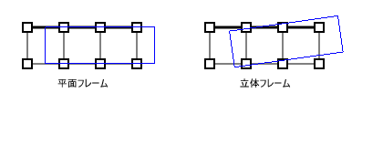
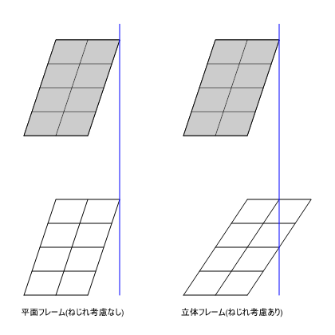

一般的用語とは異なり、建築構造による重心は主にせん断力重心を示す。ただし、慣例的に軸力重心が用いられることも多い。なぜなら、軸剛性もせん断剛性も部材断面積に比例する傾向のため結果的に近い座標になりやすく、かつより簡単に計算できるためである。せん断力重心の意味合いとしては、ある階の上の階から伝達されるせん断力を一点の集中荷重として置き換えたときに等価とみなせる位置となる。また、せん断力重心、軸力重心が上部から伝達される力によって算出されるのに対し、各階重量の中心、つまり慣性力の中心となる慣性重心もある。
剛心は階のせん断剛性の中心となる点である。単純なせん断ばねを考えれば手計算で算出できるが、曲げ変形が含まれる通常のラーメン構造では水平荷重による応力解析結果から水平剛性を算出して求められることになる。
重心と剛心が同一位置の場合、偏心モーメントによるねじれが生じず、重心と剛心の座標が大きくずれる場合にはねじれが生じる。このねじれの生じやすさを表したものが偏心率である。
保有水平耐力計算では、偏心率が15％以上になると必要保有水平耐力を割り増す必要がある。
この割増しは元々ねじれが生じない平面骨組解析が主流だった時期に定められたもので、現在主流の立体解析ではねじれも計算上評価されるので割増しは過剰との意見もある。
以下の図のように、耐震壁が偏在配置されているようなケースでは耐震壁側に応力が集中し、実際には平面的なねじれが生じる。しかしながら、平面的なねじれが考慮できない平面フレームモデルでは解析上このねじれによるラーメンフレームの変形増大が評価されない。これによって設計が危険側にならないための割り増しとして偏心率規定が定められたと考えれば、立体フレームモデルで解析を行った場合には割り増しは不要という考えもある。しかしながら、立体フレームで解いた場合でも動的なねじれ応答の励起の影響は生じうる。少なくとも現行法では考慮することが必要となる。
 